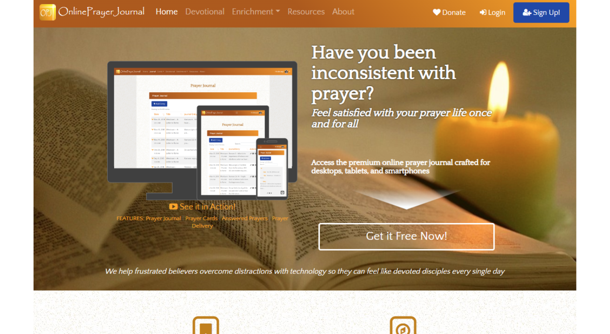
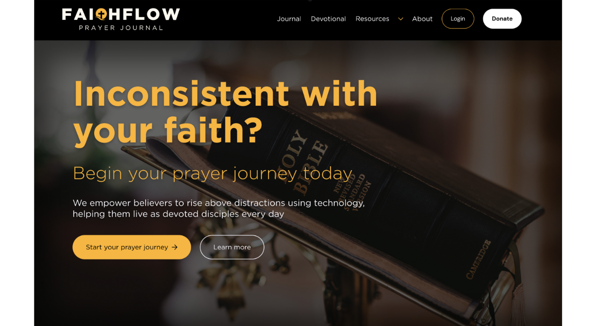
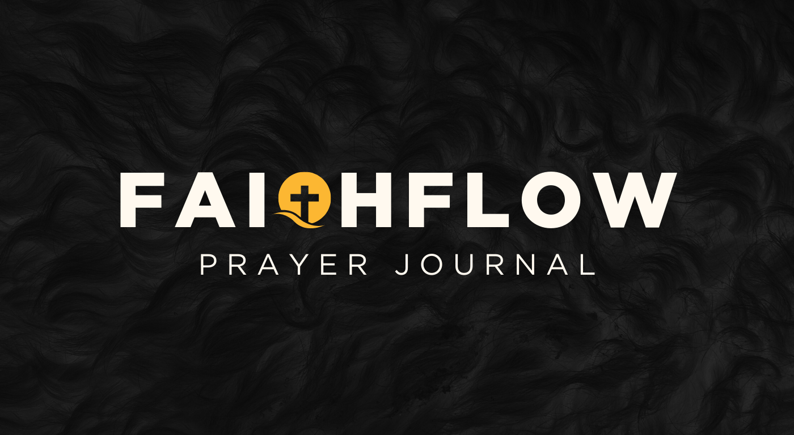
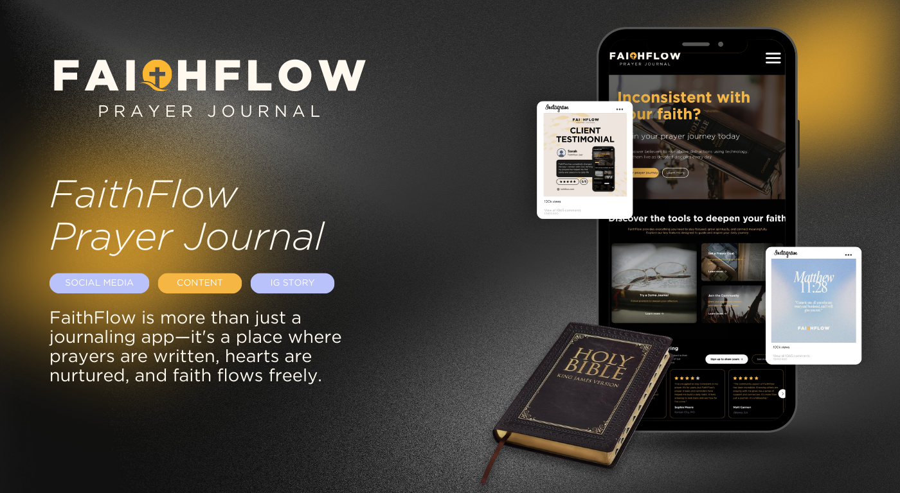
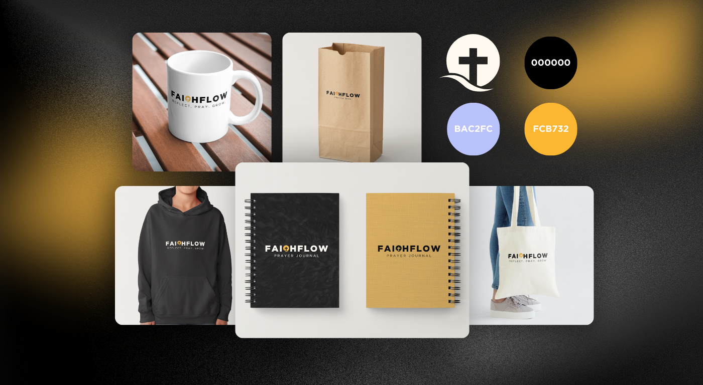
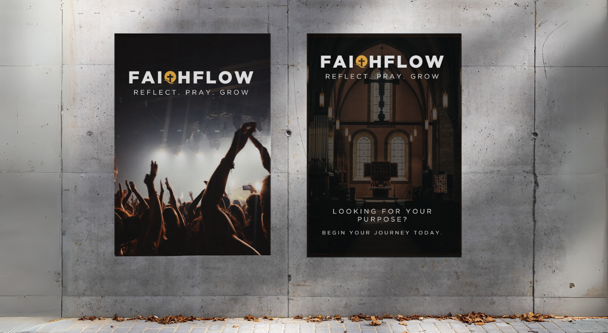

From concept to campaign — building a complete visual identity and marketing rollout for a prayer journaling app designed for Gen Z Christians.
Faith-based apps often feel either overly corporate or visually outdated. FaithFlow needed a brand that felt calm, intentional, and genuinely appealing to a younger audience — without sacrificing spiritual depth for aesthetics.
I created the full visual identity from scratch — logo, color palette, mobile UI mockups, app onboarding flow, and a marketing rollout kit including social ads, launch emails, and app store preview screens.
Created a tone-defining brand board and typographic system rooted in calm and clarity.
Designed onboarding and journaling flows in Figma with intuitive navigation and gentle visual feedback.
Developed scrollable ad concepts and a launch campaign with email sequences and social assets.
Assembled everything into a pitch-ready deck with copy, visuals, and implementation guidelines.






Increase in homepage retention
Selected for top mock project showcase